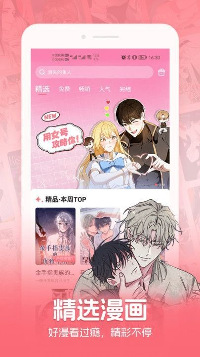

mrblue 用了半年，那些当初没预料到的事
从抱着试试看的心态装，到现在手机里常驻的漫画应用。这半年里免费节奏摸透了，缓存踩过坑，Blue Money 也当过一回冤大头。
去年冬天某个刷到韩国漫画片段的深夜，我第一次装 mrblue 是从官方下载拿到的安装包。说起来惭愧，最初的动机很朴素——那段视频里的画面确实好看，想找个正经渠道把完整的追下来。当时对这个应用几乎一无所知，只模糊知道它是韩国本土的漫画平台，去mrblue官网看了看作品分类才敢装，装完就放着了，没想过会成为接下来半年里打开频率最高的阅读类应用。
越用越顺手的，是它的免费节奏
刚装那会，我对 mrblue 的免费机制是一头雾水的。详情页上乱七八糟的韩文标签一个都看不懂，기다리면 무료 和 N화 무료 到底有什么区别？免费券在哪领？Blue Money 又是什么？头半个月基本是瞎点瞎摸，直到有天把一个新连载刷到了第 15 话才发现——原来前 N 话直接开放是 mrblue 给新读者最实在的见面礼。
现在我已经能熟练地按优先级找免费资源了：先刷免费券专区，每天轮换，上去就能读，不用等计时器；专区里没的，看详情页有没有 N화 무료 标签，新作品开播的时候大方到 15 话都能直接看；再不行才走等待免费，那个计时器最快一小时最慢一天，得掐着点。摸透这三层以后，基本上想追的作品总能在某一层找到免费入口，真正需要花 Blue Money 买的章节其实很少。
越用越烦的，是缓存和权限这两件小事
缓存这件事我是真踩过坑的。mrblue 的离线缓存都堆在应用内部存储里，普通文件管理器根本看不到。有个月手机存储报警，我挨个删应用删照片清了半天腾不出来，最后进 mrblue 的「设置 → 存储管理 → 缓存管理」一看，光一部 100 话的作品就占了四百多兆，书架里攒了七八部读完没清的，加起来两个 G 就这么没了。
现在养成了每周清一次缓存的习惯，缓存清单里哪些读完了一目了然，逐个划掉清理就行。说个反直觉的——我试过手机系统设置里的「清除应用数据」，它只清缓存和临时文件，登录状态和书架居然保留了，比卸载重装温和得多。这个小技巧帮我省了两次重新登录和重新整理书架的功夫。
权限那边倒是没那么麻烦，但 mrblue 的权限极简反而让我觉得有点意外。整个应用只有两个可选权限：通知和照片视频，一个必需权限都没有。通知权限我是建议开的——韩国漫画更新节奏快，追的作品有新话出来、免费券专区刷新了、有活动上线，通知能第一时间推过来。照片视频权限到现在我也没开过，日常阅读根本用不到，之前遇到 bug 找客服时，特意去mrblue文档翻了权限说明才临时开一下截图权限，用完又关了。
离不开的，是那个新人赠的 1000 Blue Money
注册新账号那会系统送了 1000 Blue Money，约合 1000 韩元，我当时没太当回事，以为就是个限时优惠。结果半年下来，这 1000 Blue Money 成了某种意义上的「应急基金」——遇到特别喜欢但免费渠道暂时够不到的章节，掏一点出来读一下，额度没了就等下一轮免费刷新。说出来不怕笑，我到现在还剩三百多 Blue Money 没用完，每次花都很谨慎。
反而有些当初觉得会常用的功能，到现在碰都没碰过。比如删号，mrblue 支持彻底删除账号，但要走客服流程，不是一键删。我书架上攒了二十多部在追的，Blue Money 也还有剩，真的没理由走这一步。退出登录倒是偶尔用过——之前换过一次手机号，用同一个入口登回来书架和余额都在，才确认那只是「登出」不是「删号」。

观感修正：当初高估了付费的必要性，低估了免费体系的完整度
刚装 mrblue 那会，我默认「正经看漫画就得付费」，所以对 Blue Money 这件事是有心理准备的。实际用下来反而是免费体系撑住了绝大部分阅读需求。三层免费机制叠加起来，只要不追那些更新到几百话的老作品、也不是非要第一时间追最新话，基本能做到一分钱不花也看挺多内容。
但免费不是白给的。mrblue 的免费设计本质上是一套「耐心换内容」的机制——免费券每天轮换、前 N 话是限时窗口、等待免费要掐计时器。你不耐心，就只能花 Blue Money 插队；你愿意等，就有得看。这半年下来我最大的变化，大概是心态上从「想立刻看到最新」变成了「反正明天还会更，等一等也没差」。
去留：短期内不会卸，但有一个信号得警惕
半年过去了，mrblue 没出过什么大问题，闪退过一两次是系统层面的事，应用本身稳得很。短期内不会卸，书架里还有十几部在追，免费节奏也摸得门清，Blue Money 余额还剩点零头等着应急。
但有一个信号得盯紧——如果哪天 mrblue 把免费券专区的刷新频率降了、或者把前 N 话的免费窗口砍到只剩三五话、或者 Blue Money 的价格悄悄涨了，那我就得重新评估要不要留了。这些变动都是悄无声息的，不会提前通知，只能自己每天点开看一眼才能察觉。
说到底，mrblue 对我来说就是一个「能免费看的韩国漫画应用」，如果这个核心价值没了，它和其他同类应用也就没什么区别了。
这套资料在三个仓库都能拿到，GitHub 为主，Gitee 和 GitCode 同步镜像方便国内访问，想翻更细节的说明文档可以直接过去找。